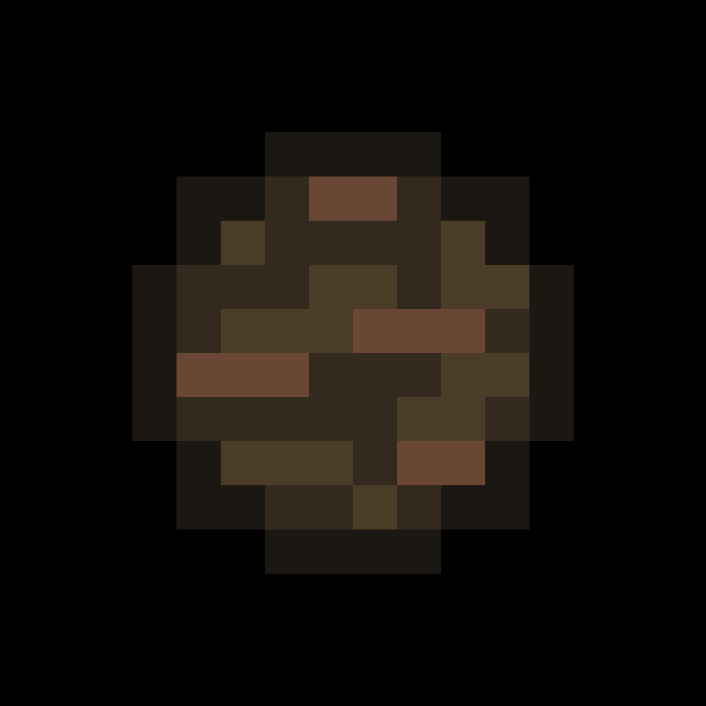

En kol-planet är en teoretisk typ av planet som består av mer kol än syre. Kärnan av det så kallade kol-planet skulle kunna bestå av järn. Ovanför kärnan skulle vara att lager av smält kiselkarbid och titankarbid. Båda används inom astronomi. Därefter skulle det finnas ett lager av grafit (samma grafit som finns i pennor) tillsammans med en kilometer tjock lager av diamanter. Ytan skulle bestå av floder av kolväten (tjära, olja) och atmosfären skulle bestå av kolmonoxid, koldioxid och metan m.fl.